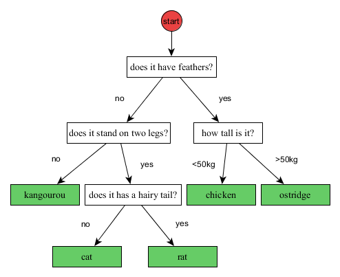
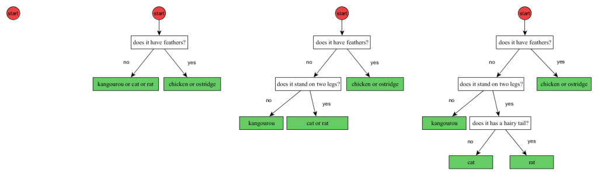

In the last two posts (Machine Learning “for Dummies” [part 1] and Machine Learning “for Dummies” [part 2]) we introduced what was the “Classification” of Machine Learning. We also presented a very famous algorithm called “k-nearest neighbors”. If you have not read these posts, you may want to do it now to be sure to understand this post.
The “k-nearest neighbors” we saw in the previous post is a widely used algorithm. However, this is also an old algorithm. Since its publication, scientists haves continued to develop other more complex and more powerful algorithms. The next algorithm that I will present you is called “Random Forest”. Random Forest is a young algorithm (10 year old) that has revolutionized Machine Learning: Random Forest is a bit more complex than k-nearest neighbors, but is it much faster to compute by a computer. Also, Random Forest gives much more “accurate” results than k-nearest neighbors. By “accurate” I mean that when scientists test the algorithm (including the Iris dataset), the Random Forest algorithm gives more often the good answer than the k-nearest neighbors.
One of the many reasons why Random Forest works best than k-nearest neighbors is because, for k-nearest neighbors, all the attributes are equally important. On the other side, Random Forest is able to find out that some attributes are more important than others. Random Forest is in fact also able to detect than some attributes are completely useless.
Random Forest is part of the family of the “decision tree” algorithms. But what is a decision tree? It is simple. A decision tree is as simple way to represent a protocol. In other words, it is a way to represent a plan of what to do in a situation. For example, decision trees are used by telemarketing operator to know what to say to the client depending of the client response. It is also used by any operator of any big machine you can imagine (nuclear power plan, submarines, etc.). It is also used by physicians to help making diagnosis.
Let’s go back to our story with a simple example. The figure bellow shows a very simple example of decision tree to determine the species of an animal. To make is simpler, I only consider few animal species. Now, let’s suppose you see an unknown animal. In this case, you can use this decision tree to find its species.
The way to go is to start at the first question at the top of the decision tree (just below the red circle), answer the question about the animal, and go down the tree in the branch depending of your answer (yes or no for the first question), and repeat these operations until you reached the bottom of the tree. When you are at the bottom of the tree, you have your answer (in the green boxes – also called leafs).

Let’s go through an example: I observe an animal that I don’t know. The first question is: Does it have feathers? Let’s suppose the animal does have feathers. Therefore we go to the right branches. The next question is: How tall is it? Let’s suppose the animal is around 3kg. It means that we have to take the left branch now. And since we reached the bottom of the tree, we know that our animal is a chicken.
Now you know what a decision tree is, let’s come back to the Random Forest algorithm: The idea behind Random Forest is simple. The algorithm generates (I will tell you how later) several decision trees (generally a couple of hundred of them) and it will use them. The questions of the decision tree will be questions on the attributes. For example, “If the petal width is higher than 1.7cm”. The answer (in the green boxes) will be the class (i.e. the species). Note that using hundreds of decision trees is impossible for humans, but computers are quite good at it.
At this point you know how to use a decision tree. But you still don’t know how to make one.
There are two main solutions: The first solution is to ask to a specialist (like Taxonomy in the case of the species). This is a nice solution, but you don’t always have a specialist for your problem. Also, you would be surprised by how hard it is for a specialist (even a very good specialist) to organize and write his knowledge. Finally, even if you have an expert that is very good to organize his knowledge, there are always cases where the expert do no thought about or did not know about. For example, for the animal species, the expert might have forgotten that baby ostridge can be smaller than 50kg.
Instead of using an expert, the scientists are using the second solution: To make the algorithm build itself the decision tree. The only condition is that the computer has some examples to look at. In the iris dataset, these examples are the irises for which we know the species!
To create a decision tree, the Random Forest algorithm always starts with an empty decision tree. An empty decision tree has just the red “start” that point directly to the answer (the green box). Of course, such decision tree would be very bad if it was left this way. Next, the algorithm will find the best first question to ask and start building the tree. In our example, the first question was “does it have feathers?”. Every time the algorithm finds a new good question to ask, it builds two branches of the tree. When there are no more questions that the algorithm consider interesting, the algorithm simply stops, and the decision tree is considered to be finished.
The way to find the best question is a bit complex, but I will try to give you the underlying idea: When the algorithm starts, the algorithm does not know how to distinguish between species. In other words, all the species are in the “same bag”. To find the best first question, the algorithm will try “all possible” questions (there might be a lot – sometime millions). For example, “How many eyes?”, “How many legs?”, “Does it has feathers”, etc. Then, for each possible question, the algorithm will look how good this question is to separate between the classes of the observations. The selected question does not have to be perfect, but it should be just better than the other. To compute how good a question is, the algorithm computes what is called an “information gain”. I will not go too much into details about that. What is important to know is that “information gain” is a way to score each question. And this is the question with the highest information gain that will be declared to be the “best question”.
The figure bellow illustrates the four first steps to make a decision tree. This process will be repeated for all the trees.

That’s (almost) it!
Once the algorithm has built its decision trees, it will use them to answer questions (i.e. to classify). In the iris dataset, the algorithm will answer “what is the species of the mysterious iris”.
If you followed tightly the explanation, there might be a little something that seams wrong to you: I told you that the algorithm was building several decision trees. However, I only showed you how to make and use a single decision tree.
The trick of Random Forest is to make each decision trees to vote independently (like for an election). At the end of the vote, the answer with the highest number of vote is selected by Random Forest.
However there is still problem left: If all the decision trees are learned the same way, they will be all the same. And if all the decision trees are the same, they will always vote the same way. Therefore, it would be the same as using a single one decision tree.
Here again, Random Forest has a trick, and this trick might surprise you at first: To make sure not all the decision trees are the same, the Random Forest algorithm randomly changes the observations it uses as example. More precisely, the algorithm will randomly remove some observations, and duplicate some others. Globally, the modified observations remain very close to the original ones, but these small differences ensure that the decision trees are all a little different. This process is called “bootstrapping”.
In addition to these two tricks, and to really make sure that the decision trees are different, the Random Forest will randomly and on purpose avoid testing some questions while building the decision tree. In this case, if the best question is not tested, then a slightly worst question will be selected to make the tree. This process is called “attribute sampling”.
I am pretty sure you wonder why on earth someone would make an algorithm that changes randomly its observations and randomly avoid testing some questions. The answer is actually quite simple: It might be that the examples we have are not perfect. For example, maybe the examples only showed cat with hairs on their tail. In this case, sphynx cat (cats without hairs) would be classified as rat. However, if the question about the tail is not asked (because of random chance), the algorithm might use another question instead (like “how big is it”). Having some side questions that are not perfect is a good idea: It is these questions that will save the day when the algorithm is confronted to observations it never encounter.
And now you know about Random Forest 🙂
You should now be able to understand what the classification of Machine Learning is. You should be familiar with the notion of observations and attributes. You should know and understand the k-nearest neighbor algorithm. And finally, you should be able to understand how the Random Forest algorithm does work.
This is the end of this post. I hope you enjoyed this post as much as I enjoyed writing it. If you have any questions or remarks, you can write them in the comments. And I will see you next time for the fourth post in this Machine Learning series: The “Cross validation”.